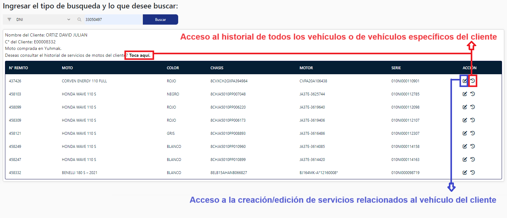

Dashboard
En esta sección a futuro van a poder encontrar gráficos pertenecientes
a los services realizados. Van a contar con múltiples gráficas
pertenecientes a distintos tipos de services.
Sistema de roles
Para poder acceder y visualizar algunas de las opciónes de la barra
lateral el usuario logueado deberá tener acceso al rol correspondiente
al service que realice. Como por ejemplo, en caso de que deba realizar
un service pertecientes a "Motos", este deberá tener asignado el rol
acorde al acceso de la realización del mismo (Ejemplos de roles: Hogar,
Bikes, Repuestos, etc).
Múltiples tipos de busquedas
Ahora en la App, van a poder contar con un tipo de busqueda mas
ampleada en cuanto a opciones.
Para motos que ya poseía DNI, en esta app se agrego código de cliente,
motor, chasis y series.
Para motos interno, que previamente poseía solo chasis, se agrego
código, nombre, motor y serie.
Bike va a contar con DNI, código de cliente, serie, cuadro.
Cambio de sucursales
Haciendo click en ese lapicito podrán visualizar en medio de la
pantalla el recuadro mostrado abajo y en este podrán reelegir la
sucursal asociada al usuario sin necesidad de desloguearse de la
aplicación.
Caso 1
Si es que el cliente no existe el usuario será aconsejado realizar la
busqueda por algún otro tipo de dato. Y en caso de realizar la busqueda
por el tipo de dato y que no se encuentre al cliente, este podrá
cargarlo en un formulario completando todos los datos.

Caso 2
En caso de que el se encuentre al cliente y este posea vehículos
comprados en YUHMAK, el usuario emisor del service podrá visualizar
algunos de los datos del cliente y además de esto también podrá tener
acceso a las acciones mostradas en la imagen (A estas acciones se tiene
acceso ya sea que el cliente haya o no comprado el vehículo en YUHMAK).
Caso 3
En caso de que el se encuentre al cliente y este no posea vehículos
comprados en YUHMAK pero si servicios realizados a su vehículo en
YUHMAK, el usuario emisor podrá tener aceso a las mismas acciones
mencionadas y mostradas en el caso 2.
Acciones
La acción del lapiz (misma que de la versión 1 de la aplicación) nos va
a servir para tener acceso al menú para realizar tanto a la creación,
como la edición de un service.
Menú de carga/edición de un service
Al ingresar aquí, se les va a cargar el historial de service de la moto
que seleccionaron para el service, y además de esto, van a poder también
editar servicios seleccionandolos a través de un desplegable.
Pestañas del Menú
El menú cuenta con 4 pestañas, y en cada una de estas secciones vamos a
realizar la carga de datos para el service. Podremos observar que cada
campo cuenta con el texto "Dato requerido" y "Dato no requerido" y en
base a esto, tenemos que cargar o decidir si cargar o no un dato.
Primera pestaña
1- En la primera pestaña vamos a poder observar los datos del cliente y
los datos de la moto, y además, en la parte de abajo vamos a contar con
la posibilidad de cargar otra moto para realizar el service.
Segunda pestaña
2- En la segunda pestaña vamos a poder observar todos los datos que se
realizan para la carga de la llamada de servicio.
Tercera pestaña
3- En la tercera pestaña de operaciones, en caso de que sea necesario
para la realización del service, vamos a poder generar salidas de
mercancías y visualizar en caso de que se hayan realizado ya alguna para
el service seleccionado.
Cuarta pestaña
4- En la pestañas de combos vamos a ver los combos ya facturados del
cliente y aptos para remitir en caso de que se realice un service por
"COMBO" o "SERVICIO". Recuerda que para realizar el cierre de los
services por este tipo de problema, el cliente si o si debera poseer
combos facturados.
Una vez cumplan con la carga de todos los datos podrán editar el servicio
como corresponde tocando en el botón que se encuentra más abajo. Espero
disfruten de la página, muchas gracias por realizar la lectura de la guía
básica. Saludos!.